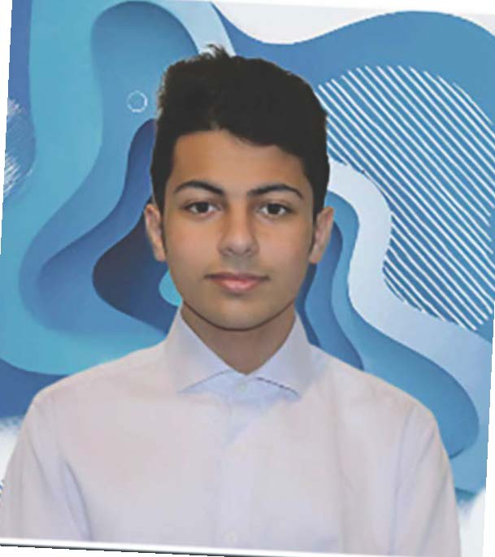

Abdulrahman Elhaddad
About me
Hello, my name is Abdulrahmab Elhaddad, and I chose to study graphic design next semester. There are experiences and personal qualities that I want to apply as a potential student in graphic design. I have to mix balance with manual art and technology in order to design projects, whether alone or with my colleagues. I also want to have skills such as communicating with people and solving problems. There are skills in which I must be precise, such as focusing on the design details and reviewing them more than once in order to I must send it to the professor and I must have time management in order to work on my projects with ease and focus and deliver them in a timely manner. I must also have more than one idea in my mind and think quickly about how I can connect things together in order to create a wonderful design, or in short, to be A creative person.
I was a student in the Design Foundation Program and I learned many things such as sketching, computer graphics, layout and design, and I think these things will benefit me very much as a graphic design student. I also learned from many programs such as Photoshop, Illustrator and Indesign on how to use the tools to design a specific need. Such as typography and photos. I also took the understanding colour class, and this is a class within graphic design, and I learned from it how to apply colors together, how to obtain information about them, and how colors are applied to companies, and I liked this class very much. As a graphic student, I must bring the skills that the client asks of me and combine Everything I did to make a wonderful project that looks beautiful.
"I will do my best to achieve my dream"- Abdulrahman
My skills
Graphic design courses
- Computer Graphic 2
- Graphic Design 2
- Concept Sketching 2
- Communication for Graphic Design
- Typography 2
- Web Design 1